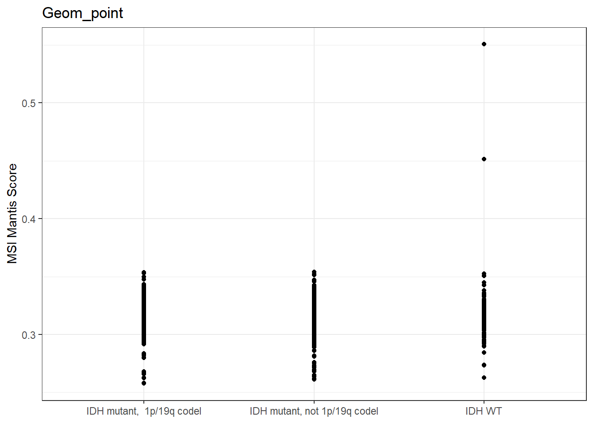
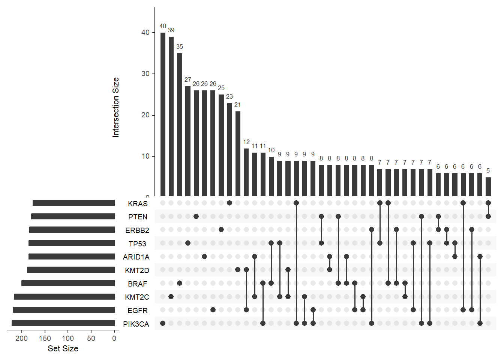

Code
LGG <- read.delim("data/lgg_tcga_pan_can_atlas_2018_clinical_data.tsv")Data source: CBioPortal, TCGA, LGG
LGG <- read.delim("data/lgg_tcga_pan_can_atlas_2018_clinical_data.tsv")We would like to see, how the data is distributed in our study.
ggplot(LGG) +
geom_density(aes(Diagnosis.Age))+theme_bw()+ ggtitle("Density plot")+xlab("Age at diagnosis")
ggplot(LGG) +
geom_histogram(aes(Diagnosis.Age), fill="gold", color="black")+theme_bw()+ ggtitle("Histogram")+xlab("Age at diagnosis")ggplot(LGG) +
geom_histogram(aes(Diagnosis.Age), bins = 10, fill="gold", color="black")+theme_bw()+ ggtitle("Histogram with diffierent bin size")+xlab("Age at diagnosis")We would like to see, how the data is distributed in our study.
ggplot(LGG) +
geom_bar(aes(Race.Category))+theme_bw()+ ggtitle("Bar plot")LGG %>%
filter(!is.na(Race.Category)) %>%
mutate(categories="Race") %>%
ggplot() +
geom_bar(aes(x=categories, fill=Race.Category)) +
coord_flip() +
theme_minimal() +
theme(aspect.ratio=0.2, axis.title.y = element_blank())+
ggtitle("Stacked bar plot")+
scale_fill_futurama(name="Race category")
f <- ggplot(LGG, aes(x = Winter.Hypoxia.Score, y=Ragnum.Hypoxia.Score))
f + geom_point(size=1.5)+ggtitle("Geom_point")+theme_bw()+xlab("Winter Hypoxia Score")+ylab("Ragnum Hypoxia Score")e <- LGG %>%
filter(!is.na(Subtype)) %>%
ggplot(aes(x = Subtype, y=MSI.MANTIS.Score))
e +
geom_point()+ggtitle("Geom_point") +
theme_bw()+
scale_x_discrete(labels=c("LGG_IDHwt" = "IDH WT", "LGG_IDHmut-non-codel" = "IDH mutant, not 1p/19q codel", "LGG_IDHmut-codel" = "IDH mutant, 1p/19q codel")) +
ylab("MSI Mantis Score")+
theme(axis.title.x = element_blank())e +
geom_jitter(width = 0.08)+ggtitle("Geom_jitter")+
theme_bw()+
scale_x_discrete(labels=c("LGG_IDHwt" = "IDH WT", "LGG_IDHmut-non-codel" = "IDH mutant, not 1p/19q codel", "LGG_IDHmut-codel" = "IDH mutant, 1p/19q codel")) +
ylab("MSI Mantis Score")+
theme(axis.title.x = element_blank())e +
geom_boxplot()+ggtitle("Geom_boxplot")+
theme_bw()+
scale_x_discrete(labels=c("LGG_IDHwt" = "IDH WT", "LGG_IDHmut-non-codel" = "IDH mutant, not 1p/19q codel", "LGG_IDHmut-codel" = "IDH mutant, 1p/19q codel")) +
ylab("MSI Mantis Score")+
theme(axis.title.x = element_blank())e +
geom_violin(fill="salmon")+ggtitle("Geom_violin")+
theme_bw()+
scale_x_discrete(labels=c("LGG_IDHwt" = "IDH WT", "LGG_IDHmut-non-codel" = "IDH mutant, not 1p/19q codel", "LGG_IDHmut-codel" = "IDH mutant, 1p/19q codel")) +
ylab("MSI Mantis Score")+
theme(axis.title.x = element_blank())e +
geom_dotplot(binaxis = "y", stackdir =
"center", binwidth = 1/500)+ggtitle("Geom_dotplot")+
theme_bw()+
scale_x_discrete(labels=c("LGG_IDHwt" = "IDH WT", "LGG_IDHmut-non-codel" = "IDH mutant, not 1p/19q codel", "LGG_IDHmut-codel" = "IDH mutant, 1p/19q codel")) +
ylab("MSI Mantis Score")+
theme(axis.title.x = element_blank())e + geom_boxplot(width=0.4, fill="lightpink") + geom_jitter(width = 0.08, alpha=0.7, color="lightpink4") +
theme_bw()+
scale_x_discrete(labels=c("LGG_IDHwt" = "IDH WT", "LGG_IDHmut-non-codel" = "IDH mutant, not 1p/19q codel", "LGG_IDHmut-codel" = "IDH mutant, 1p/19q codel")) +
ylab("MSI Mantis Score")+
theme(axis.title.x = element_blank())g <- LGG %>%
filter(!is.na(Subtype) & !is.na(Race.Category)) %>%
#count(Subtype, Race.Category) %>%
ggplot(aes(x = Subtype, y=Race.Category))
g + geom_count(color="red4")+
theme_minimal()+
scale_x_discrete(labels=c("LGG_IDHwt" = "IDH WT", "LGG_IDHmut-non-codel" = "IDH mutant, not 1p/19q codel", "LGG_IDHmut-codel" = "IDH mutant, 1p/19q codel")) +
scale_fill_material("blue", name="Count")+
theme(axis.title = element_blank(), axis.text.x = element_text(angle=45, hjust = 1), aspect.ratio = 3)
LGG %>%
filter(!is.na(Subtype) & !is.na(Race.Category)) %>%
count(Subtype, Race.Category) %>%
ggplot(aes(x = Subtype, y=Race.Category)) +
geom_tile(aes(fill = n))+
theme_minimal()+
scale_x_discrete(labels=c("LGG_IDHwt" = "IDH WT", "LGG_IDHmut-non-codel" = "IDH mutant, not 1p/19q codel", "LGG_IDHmut-codel" = "IDH mutant, 1p/19q codel")) +
scale_fill_material("blue", name="Count")+
theme(axis.title = element_blank(), axis.text.x = element_text(angle=45, hjust = 1))For example the change of categorical variables in multiple years. Use instead of pie chart.
LGG %>%
filter(!is.na(Subtype)) %>%
ggplot() +
geom_bar(aes(x=Subtype, fill=Cancer.Type.Detailed), width = 0.5, position = "fill", color="black") + coord_flip() + theme_bw() + scale_fill_futurama(name="Cancer type")+ylab("Proportion")+theme(axis.title.y = element_blank(), panel.border = element_blank(), aspect.ratio = 0.8)+scale_x_discrete(labels=c("LGG_IDHwt" = "IDH WT", "LGG_IDHmut-non-codel" = "IDH mutant, not 1p/19q codel", "LGG_IDHmut-codel" = "IDH mutant, 1p/19q codel"))
Example: gene expression values
library(TCGAbiolinks)
library(SummarizedExperiment)
query <- GDCquery(
project = "TCGA-LGG",
data.category = "Transcriptome Profiling",
data.type = "Gene Expression Quantification",
workflow.type = "STAR - Counts"
)
GDCdownload(query = query)
data <- GDCprepare(query = query)
saveRDS(data, "data/LGG_GE.RDS")
data1 <- data[sample(1:nrow(data), 500),]
saveRDS(data1, "data/LGG_GE_small.RDS")
ge <- assay(data1, "tpm_unstrand")
saveRDS(ge, "data/LGG_GE_small_mat.RDS")Heatmap packages:
Expert level specifically for genomic signals:
https://github.com/jokergoo/EnrichedHeatmap
ge <- readRDS("data/LGG_GE_small_mat.RDS")
pheatmap(ge)Example II: Enrichment results
Use UpSet plot instead of Venn Diagram!
library(UpSetR)
mutation_data <- matrix(sample(c(0,1), 10000, replace = T, prob = c(0.8, 0.2)), nrow=1000)
colnames(mutation_data) <- c("TP53", "KMT2C", "KMT2D", "ARID1A", "PIK3CA", "PTEN", "EGFR", "ERBB2", "KRAS", "BRAF")
mutation_data <- as.data.frame(mutation_data)
upset(mutation_data, nsets = 10, mb.ratio = c(0.55, 0.45), order.by = "freq")